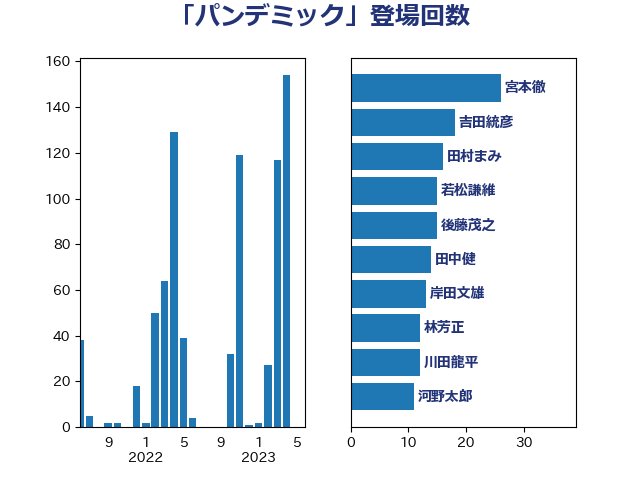

単語「パンデミック」

| 宮本徹 | 日本共産党 | 26 回 |
| 吉田統彦 | 立憲民主党 | 18 回 |
| 田村まみ | 国民民主党 | 16 回 |
| 若松謙維 | 公明党 | 15 回 |
| 後藤茂之 | 自由民主党 | 15 回 |
| 田中健 | 国民民主党 | 14 回 |
| 岸田文雄 | 自由民主党 | 13 回 |
| 林芳正 | 自由民主党 | 12 回 |
| 川田龍平 | 立憲民主党 | 12 回 |
| 河野太郎 | 自由民主党 | 11 回 |
| 平木大作 | 公明党 | 11 回 |
| 倉林明子 | 日本共産党 | 11 回 |
| 高木真理 | 立憲民主党 | 10 回 |
| 堀場幸子 | 日本維新の会 | 10 回 |
| 高階恵美子 | 自由民主党 | 9 回 |
| 池下卓 | 日本維新の会 | 9 回 |
| 加藤勝信 | 自由民主党 | 9 回 |
| 青山繁晴 | 自由民主党 | 8 回 |
| 小林鷹之 | 自由民主党 | 8 回 |
| 大石あきこ | れいわ新選組 | 8 回 |
| 高木かおり | 日本維新の会 | 7 回 |
| 仁木博文 | 無所属 | 7 回 |
| 中島克仁 | 立憲民主党 | 7 回 |
| 上田清司 | 国民民主党 | 7 回 |
| 鈴木俊一 | 自由民主党 | 6 回 |
| 西田実仁 | 公明党 | 6 回 |
| 石井苗子 | 日本維新の会 | 6 回 |
| 瀬戸隆一 | 自由民主党 | 6 回 |
| 浅野哲 | 国民民主党 | 6 回 |
| 柴田巧 | 日本維新の会 | 6 回 |
| 松本尚 | 自由民主党 | 6 回 |
| 井坂信彦 | 立憲民主党 | 6 回 |
| 井上哲士 | 日本共産党 | 6 回 |
| 西村智奈美 | 立憲民主党 | 5 回 |
| 田村貴昭 | 日本共産党 | 5 回 |
| 本田顕子 | 自由民主党 | 5 回 |
| 早稲田ゆき | 立憲民主党 | 5 回 |
| 小池晃 | 日本共産党 | 5 回 |
| 谷合正明 | 公明党 | 4 回 |
| 萩生田光一 | 自由民主党 | 4 回 |
| 神谷政幸 | 自由民主党 | 4 回 |
| 河西宏一 | 公明党 | 4 回 |
| 東徹 | 日本維新の会 | 4 回 |
| 山田宏 | 自由民主党 | 4 回 |
| 国光あやの | 自由民主党 | 4 回 |
| 佐藤英道 | 公明党 | 4 回 |
| 中川正春 | 立憲民主党 | 4 回 |
| 高橋光男 | 公明党 | 3 回 |
| 阿部司 | 日本維新の会 | 3 回 |
| 福島みずほ | 社会民主党 | 3 回 |
| 田村智子 | 日本共産党 | 3 回 |
| 田村憲久 | 自由民主党 | 3 回 |
| 江田憲司 | 立憲民主党 | 3 回 |
| 武見敬三 | 自由民主党 | 3 回 |
| 柳本顕 | 自由民主党 | 3 回 |
| 杉尾秀哉 | 立憲民主党 | 3 回 |
| 星北斗 | 自由民主党 | 3 回 |
| 斎藤アレックス | 国民民主党 | 3 回 |
| 塩崎彰久 | 自由民主党 | 3 回 |
| 堂込麻紀子 | 無所属 | 3 回 |
| 友納理緒 | 自由民主党 | 3 回 |
| 上月良祐 | 自由民主党 | 3 回 |
| 高木宏壽 | 自由民主党 | 2 回 |
| 青山大人 | 立憲民主党 | 2 回 |
| 鈴木英敬 | 自由民主党 | 2 回 |
| 野上浩太郎 | 自由民主党 | 2 回 |
| 谷田川元 | 立憲民主党 | 2 回 |
| 藤川政人 | 自由民主党 | 2 回 |
| 舞立昇治 | 自由民主党 | 2 回 |
| 自見はなこ | 自由民主党 | 2 回 |
| 羽生田俊 | 自由民主党 | 2 回 |
| 稲富修二 | 立憲民主党 | 2 回 |
| 福田昭夫 | 立憲民主党 | 2 回 |
| 石田昌宏 | 自由民主党 | 2 回 |
| 水野素子 | 立憲民主党 | 2 回 |
| 比嘉奈津美 | 自由民主党 | 2 回 |
| 森屋隆 | 立憲民主党 | 2 回 |
| 森屋宏 | 自由民主党 | 2 回 |
| 斉藤鉄夫 | 公明党 | 2 回 |
| 岩屋毅 | 自由民主党 | 2 回 |
| 山本博司 | 公明党 | 2 回 |
| 山崎正恭 | 公明党 | 2 回 |
| 山口壯 | 自由民主党 | 2 回 |
| 小西洋之 | 立憲民主党 | 2 回 |
| 宮本岳志 | 日本共産党 | 2 回 |
| 堀内詔子 | 自由民主党 | 2 回 |
| 吉良よし子 | 日本共産党 | 2 回 |
| 古屋範子 | 公明党 | 2 回 |
| 加藤明良 | 自由民主党 | 2 回 |
| 伊佐進一 | 公明党 | 2 回 |
| 仁比聡平 | 日本共産党 | 2 回 |
| 中司宏 | 日本維新の会 | 2 回 |
| 一谷勇一郎 | 日本維新の会 | 2 回 |
| 高野光二郎 | 自由民主党 | 1 回 |
| 青木愛 | 立憲民主党 | 1 回 |
| 青木一彦 | 自由民主党 | 1 回 |
| 阿部弘樹 | 日本維新の会 | 1 回 |
| 長妻昭 | 立憲民主党 | 1 回 |
| 長友慎治 | 国民民主党 | 1 回 |
| 足立康史 | 日本維新の会 | 1 回 |
| 西田昌司 | 自由民主党 | 1 回 |
| 西村康稔 | 自由民主党 | 1 回 |
| 藤井比早之 | 自由民主党 | 1 回 |
| 若林健太 | 自由民主党 | 1 回 |
| 芳賀道也 | 国民民主党 | 1 回 |
| 窪田哲也 | 公明党 | 1 回 |
| 秋野公造 | 公明党 | 1 回 |
| 福重隆浩 | 公明党 | 1 回 |
| 神谷宗幣 | 参政党 | 1 回 |
| 石川大我 | 立憲民主党 | 1 回 |
| 石垣のりこ | 立憲民主党 | 1 回 |
| 田畑裕明 | 自由民主党 | 1 回 |
| 田島麻衣子 | 立憲民主党 | 1 回 |
| 牧島かれん | 自由民主党 | 1 回 |
| 牧原秀樹 | 自由民主党 | 1 回 |
| 片山さつき | 自由民主党 | 1 回 |
| 滝波宏文 | 自由民主党 | 1 回 |
| 森山浩行 | 立憲民主党 | 1 回 |
| 梅村聡 | 日本維新の会 | 1 回 |
| 梅村みずほ | 日本維新の会 | 1 回 |
| 柴愼一 | 立憲民主党 | 1 回 |
| 柴山昌彦 | 自由民主党 | 1 回 |
| 枝野幸男 | 立憲民主党 | 1 回 |
| 松沢成文 | 日本維新の会 | 1 回 |
| 末次精一 | 立憲民主党 | 1 回 |
| 末松義規 | 立憲民主党 | 1 回 |
| 有村治子 | 自由民主党 | 1 回 |
| 日下正喜 | 公明党 | 1 回 |
| 打越さく良 | 立憲民主党 | 1 回 |
| 志位和夫 | 日本共産党 | 1 回 |
| 徳永エリ | 立憲民主党 | 1 回 |
| 庄子賢一 | 公明党 | 1 回 |
| 川合孝典 | 国民民主党 | 1 回 |
| 山谷えり子 | 自由民主党 | 1 回 |
| 山田太郎 | 自由民主党 | 1 回 |
| 山添拓 | 日本共産党 | 1 回 |
| 山下雄平 | 自由民主党 | 1 回 |
| 山下貴司 | 自由民主党 | 1 回 |
| 小熊慎司 | 立憲民主党 | 1 回 |
| 小沢雅仁 | 立憲民主党 | 1 回 |
| 宮本周司 | 自由民主党 | 1 回 |
| 宮崎勝 | 公明党 | 1 回 |
| 安江伸夫 | 公明党 | 1 回 |
| 守島正 | 日本維新の会 | 1 回 |
| 太栄志 | 立憲民主党 | 1 回 |
| 天畠大輔 | れいわ新選組 | 1 回 |
| 大島九州男 | れいわ新選組 | 1 回 |
| 塩田博昭 | 公明党 | 1 回 |
| 城内実 | 自由民主党 | 1 回 |
| 城井崇 | 立憲民主党 | 1 回 |
| 吉田宣弘 | 公明党 | 1 回 |
| 吉田久美子 | 公明党 | 1 回 |
| 吉田とも代 | 日本維新の会 | 1 回 |
| 古川俊治 | 自由民主党 | 1 回 |
| 北神圭朗 | 無所属 | 1 回 |
| 住吉寛紀 | 日本維新の会 | 1 回 |
| 伊藤渉 | 公明党 | 1 回 |
| 伊藤岳 | 日本共産党 | 1 回 |
| 伊藤孝恵 | 国民民主党 | 1 回 |
| 伊東信久 | 日本維新の会 | 1 回 |
| 井原巧 | 自由民主党 | 1 回 |
| 井上信治 | 自由民主党 | 1 回 |
| 中谷一馬 | 立憲民主党 | 1 回 |
| 中山展宏 | 自由民主党 | 1 回 |
| 世耕弘成 | 自由民主党 | 1 回 |
| 三宅伸吾 | 自由民主党 | 1 回 |
| 三ッ林裕巳 | 自由民主党 | 1 回 |
| こやり隆史 | 自由民主党 | 1 回 |